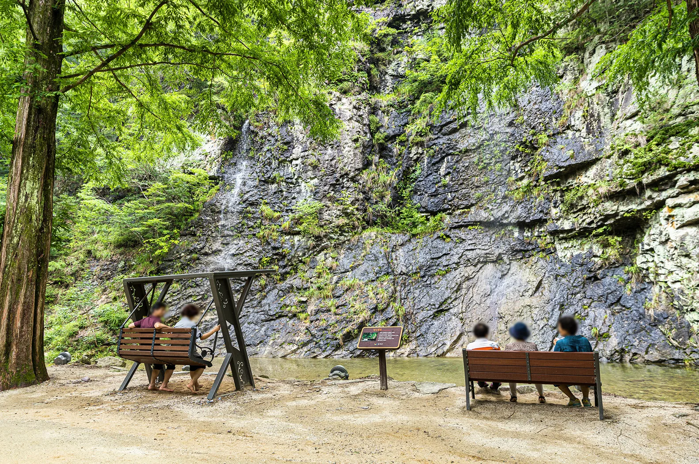
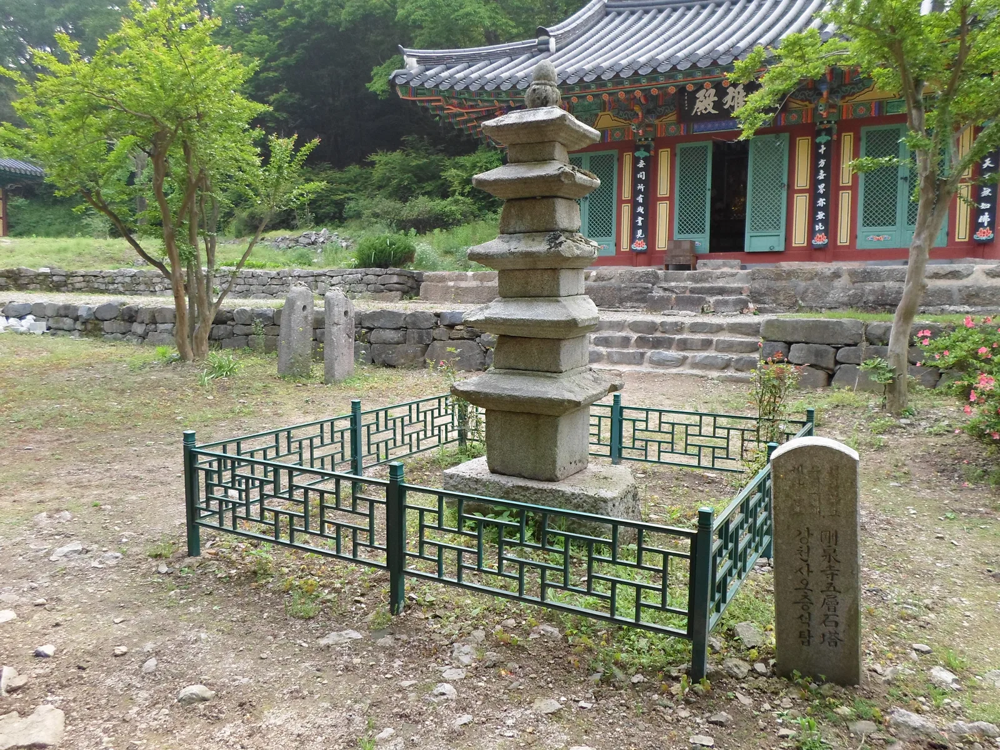
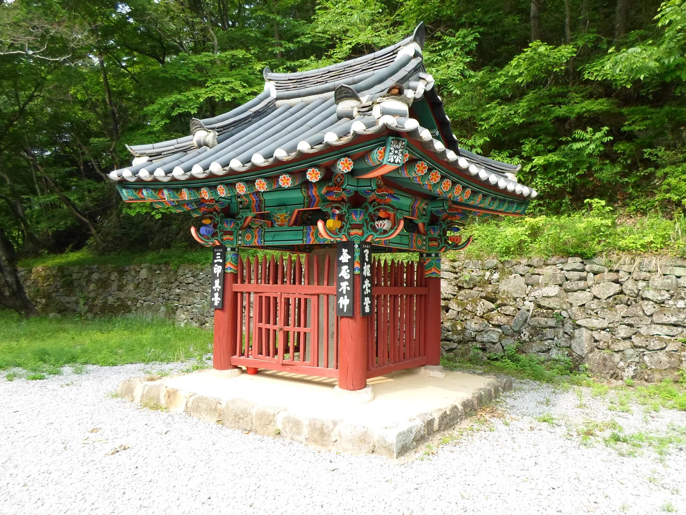

▲ 단풍철 강천산군립공원 계곡길. 수면에 비친 단풍 반영이 순창 가을여행의 대표 장면으로 꼽힌다 사진=순창군
1. 강천산군립공원, 어디에 있고 언제 가야 하나
강천산군립공원은 전북특별자치도 순창군 팔덕면 강천산길 97에 있으며, 1981년 1월 7일 전국 최초의 군립공원 1호로 지정됐다. 최고봉인 왕자봉(해발 583.7m)을 비롯해 선녀봉·연대봉 등이 병풍처럼 둘러싸고 있어 '호남의 소금강'으로도 불린다. 순창읍에서 정읍 방향으로 8km쯤 가면 공원 입구에 닿는다. 입장료는 성인 5,000원, 초중고생 4,000원이며, 30인 이상 단체는 성인 4,500원·청소년 3,500원으로 할인된다. 만 6세 이하와 70세 이상, 순창군민, 국가유공자, 장애인은 무료다. 입장료 중 2,000원은 순창사랑상품권으로 돌려받아 공원 인근 식당·카페·시장에서 현금처럼 쓸 수 있다. 주차장은 매표소 인근을 포함해 여러 곳에 무료로 운영되며, 단풍철 성수기에는 제3주차장에서 공원 입구까지 무궤도 전기열차(편도 1,000원)가 수시로 다녀 주차 후 이동 부담을 덜 수 있다.

▲ 강천산군립공원 계곡. 암벽을 타고 흐르는 물줄기 앞으로 쉼터가 조성돼 있다 사진=전북특별자치도
2. 강천산의 상징, 지상 50m 구름다리(현수교)
강천산의 대표 명물은 1980년 8월 2일 준공된 구름다리(현수교)다. 신선봉 전망대로 오르는 길에 놓기 위해 그해 4월 착공했으며, 전북대 박춘혁 교수가 설계했다. 지상 50m 높이에 길이 78m·폭 1m로 놓여, 호남에서 가장 큰 규모의 현수교로 꼽힌다. 다리 위에서는 계곡을 가득 채운 단풍과 기암괴석, 멀리 순창 들판까지 한눈에 내려다볼 수 있어 강천산 단풍철 인증사진의 단골 배경이 된다. 다리로 오르는 길이 가팔라 노약자나 어린이, 고소공포증이 있는 방문객은 완만한 경로를 택하는 편이 낫다.
공원 안에는 구름다리 외에도 인공 폭포인 병풍폭포(높이 40m·폭 15m)와 구장군폭포(높이 120m)가 있다. 병풍폭포는 공원 입구에서 도보 5분 거리로, 병풍처럼 둘러선 바위에 2003년 조성된 인공 폭포로 분당 약 5톤의 물이 떨어진다. 여름철에는 물보라가 퍼지며 체감 온도를 낮춰주고, 단풍철에는 붉게 물든 절벽과 어우러지는 풍경으로 인기가 높다.
3. 천년고찰 강천사와 오층석탑
강천사(剛泉寺)는 신라 진성여왕 원년인 887년, 풍수지리설을 체계화한 도선국사가 창건했다. 이후 고려 충숙왕 3년(1316년) 덕현선사가 절을 다시 지으며 오층석탑을 세웠다. 화강암으로 정교하게 다듬은 이 탑은 다보탑이라고도 불리며, 전라북도 유형문화재 제92호로 지정돼 있다. 임진왜란(1592~1598) 때 이 탑을 제외한 경내 건물이 모두 불에 타 사라졌고, 탑의 2·3·4층 덮개돌에는 6·25 전쟁 당시 총탄을 맞은 흔적이 지금도 남아 있다. 절은 1604년(선조 37년) 소요대사가 중건했으며, 1959년부터는 김장엽 스님이 복원을 이어가 지금의 모습을 갖췄다.

▲ 강천사 오층석탑. 1316년 덕현선사가 절을 중창하며 세운 것으로 추정되며, 전북 유형문화재 제92호다 사진=Wikimedia Commons (Leedkmn, CC BY-SA 3.0)
경내에는 국내에서 가장 오래된 모과나무(수령 약 300년)도 자리해, 지금도 꽃을 피우고 열매를 맺는다. 공원 입구에서 강천사까지는 약 1.8km, 단풍이 물든 계곡길을 따라 걷다 보면 자연스럽게 닿는다.
4. 신선봉 코스와 삼인대
강천산 트레킹 코스는 난이도별로 나뉜다. 가장 평탄한 대표 코스는 병풍폭포-강천사-구름다리-삼선대팔각정-황우제골로 이어지는 5.5km 구간(약 2시간)으로, 길이 넓고 평평해 유모차나 휠체어를 이용하는 방문객도 어렵지 않게 다닐 수 있다. 여기에 신선봉 전망대를 더해 병풍폭포-강천사-구름다리-신선봉 전망대-황우제골-삼인대-관리사무소로 도는 5km 코스(약 2시간)도 있고, 옥호봉까지 포함한 7.5km 완주 코스(약 3시간)도 있다.
| 코스 | 경로 | 거리·시간 |
|---|---|---|
| 평지 산책 코스 | 병풍폭포-강천사-구름다리-삼선대팔각정-황우제골 | 5.5km, 약 2시간 |
| 신선봉 코스 | 병풍폭포-강천사-구름다리-신선봉 전망대-황우제골-삼인대-관리사무소 | 5km, 약 2시간 |
| 완주 코스 | 병풍폭포-옥호봉-황우제골-신선봉-구름다리-강천사-매표소 | 7.5km, 약 3시간 |
신선봉 코스 막바지에 지나는 삼인대(三印臺)는 조선 중종 10년(1515년) 순창군수 김정, 담양부사 박상, 무안현감 류옥이 폐위된 왕비 신씨(훗날 단경왕후)의 복위를 청하는 상소를 올리며 관직 인장을 소나무 가지에 걸고 각오를 다졌던 자리다. 전라북도 유형문화재 제27호로 지정돼 있다.

▲ 삼인대 비각. 1515년 상소를 올린 세 관리의 뜻을 기려 세워졌으며, 전북 유형문화재 제27호다 사진=Wikimedia Commons (Leedkmn, CC BY-SA 3.0)
📍 단풍철 방문 팁
강천산 단풍은 보통 11월 초~중순 절정을 이루며(예년 기준 11월 10~15일 무렵), 인근 내장산보다 며칠가량 늦게 물드는 경향이 있다고 알려져 있다. 절정 시기는 그해 기온에 따라 달라지므로, 방문 전 순창군청이나 공원 홈페이지 공지를 확인하는 편이 안전하다. 문의는 강천산관리사무소(063-650-1672)로 하면 된다.
5. 차로 가는 길
수도권에서는 서해안고속도로를 타고 고창담양고속도로를 거쳐 광주대구고속도로 순창IC로 빠지는 경로가 일반적이다. 순창IC를 나온 뒤 내비게이션에 '강천산주차장' 또는 '순창군 팔덕면 강천산길 97'을 입력하면 된다. 부산에서는 남해고속도로 진주IC와 중부고속도로 함양IC를 거쳐 광주대구고속도로 순창IC로 진입하면 약 3시간, 대구에서는 광주대구고속도로를 타고 순창IC까지 약 2시간 30분이 걸린다.
6. 하루 코스로 정리하면
매표소에서 시작해 병풍폭포를 먼저 둘러보고, 계곡길을 따라 강천사까지 걸으며 오층석탑과 모과나무를 본다. 이어 구름다리를 건너 단풍과 계곡을 조망한 뒤, 시간이 남으면 신선봉 전망대와 삼인대까지 돌아 나오는 식이다. 평지 코스만 택하면 2시간 안팎, 신선봉까지 포함하면 반나절 코스가 된다.
✅ 출발 전 확인할 것
· 단풍 절정 시기는 그해 기온에 따라 유동적이니 방문 직전 공지 확인
· 입장료 5,000원 중 2,000원은 순창사랑상품권으로 환급
· 구름다리 진입로 일부는 경사가 가팔라 편한 신발 권장
· 주차장은 매표소 인근 등 여러 곳에 무료 운영